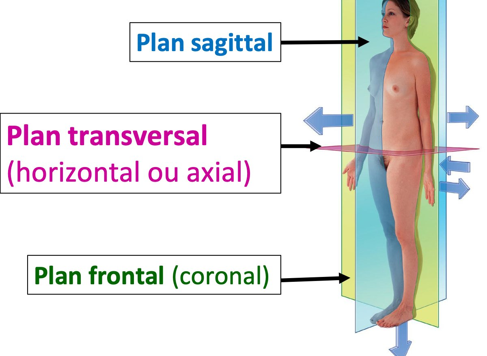
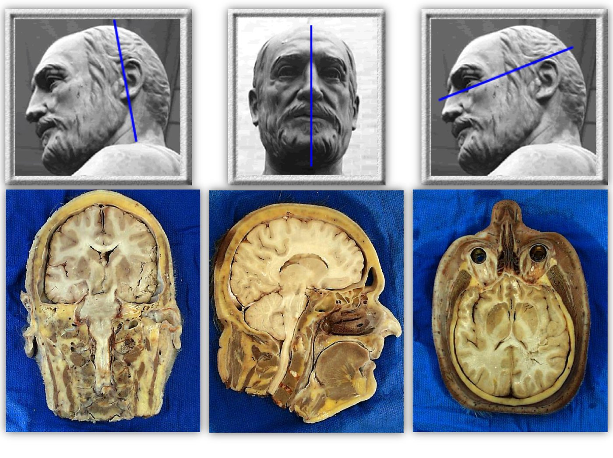

S1 · Anatomy · Summary
Anatomical language
- Essentials
- Nomenclature
- Reference position
- Axes
- Planes
- Movements
- Location terms
- Structural levels
- Systems
- Body regions
- Exam traps
- Self-check
If you remember only this
- Nomina Anatomica = international nomenclature, written in Latin, from an international agreement, to universalize the study of the human body.
- Reference position: living body standing upright, upper limbs hanging along the trunk, palms forward, gaze straight and horizontal, legs extended, feet together on the ground.
- Body axis: vertical (longitudinal) line dropped from the vertex, through the body's centre of gravity (pelvis). Hand axis → 3rd finger. Foot axis → 2nd toe. Both are longitudinal.
- Transverse plane: parallel to the ground → superior (cranial) / inferior (caudal). Frontal: vertical, parallel to the forehead → anterior / posterior. Sagittal: vertical, anteroposterior → median = symmetrical right/left; paramedian = asymmetrical medial/lateral.
- Movements: flexion/extension = transverse axis, sagittal plane; medial/lateral rotation = vertical axis, transverse plane; abduction/adduction = sagittal axis, frontal plane.
- Nutrition systems: digestive, circulatory, respiratory, urinary, endocrine. Relational life: locomotor, nervous, sensory.
1.1 Anatomical nomenclature (Nomina Anatomica) p. 3 slides p. 9–10 2023-24
Anatomical language (anatomical nomenclature)
The International Nomenclature of Human Anatomy, written in Latin, the result of an international agreement; its aim
is to universalize the study of the human body.
| Version | Date |
|---|---|
| Basel Nomina Anatomica | Published 1895 (slides) |
| Nomina Anatomica (NA) | Adopted in Paris — notes: 1955; slides: officially published 1956 |
| Terminologia Anatomica (TA) | Published 1998, adopted in all countries (slides) |
The nomenclature refers to a well-defined position of the body, in which we distinguish 3 axes, which define 3 planes, and dynamic reference points (direction of movements).
1.2 Reference anatomical position p. 3 slides p. 12 2023-24 · 2024-25
All anatomical descriptions refer to it; it is defined by international convention. The subject is:
- a living human body, upright (standing);
- upper limbs hanging along the trunk;
- palms facing forward;
- gaze straight and horizontal;
- legs extended;
- feet together, placed on the ground.
1.3 Reference axes p. 3 slides p. 14–17 2023-24 · 2024-25 · 2025-26
| Axis | Definition |
|---|---|
| Axes of space — 3, perpendicular (slides) | |
| Vertical (longitudinal) | Oriented from bottom to top |
| Sagittal | Oriented from back to front |
| Transverse (horizontal) | Oriented from right to left |
| Reference axes of the body | |
| Body axis 🎯 | Vertical line dropped from the top of the skull (vertex) that passes through the body's centre of gravity, located at the level of the pelvis. |
| Hand axis | Longitudinal axis through the 3rd finger. |
| Foot axis 🎯 | Longitudinal axis through the 2nd toe. |
Memory trick
Hand → 3rd finger, foot → 2nd toe: the hand has more to hold, so its number is bigger (3 > 2).
1.4 Reference planes p. 3 slides p. 19–23 2024-25 · 2025-26
Three perpendicular planes:
| Plane | Orientation | Divides the body into |
|---|---|---|
| Frontal (coronal) | Vertical, parallel to the forehead | Anterior and posterior parts |
| Median sagittal | Vertical, anteroposterior, through the midline | 2 symmetrical parts: right and left |
| Paramedian sagittal 🎯 | Vertical, anteroposterior, beside the midline | 2 asymmetrical parts: medial and lateral (notes: internal and external) |
| Transverse (horizontal, axial) 🎯 | Parallel to the ground | Superior (cranial) and inferior (caudal) parts |


2. Dynamic reference points (movements) p. 3–4 slides p. 25–28 2023-24 · 2024-25 · 2025-26
They give the direction of movements. Each movement happens in a plane and around an axis.
| Movement | Definition | Axis | Plane |
|---|---|---|---|
| Flexion 🎯 | Brings a body part forward | Transverse | Sagittal |
| Extension | Brings a body part backward | ||
| Medial (internal) rotation 🎯 | Rotation from outside to inside | Vertical | Transverse |
| Lateral (external) rotation | Rotation from inside to outside | ||
| Abduction | Moves a body part away from the median plane | Sagittal | Frontal |
| Adduction | Brings a body part closer to the median plane |
3. Location and direction terms p. 4 slides p. 30–31
| Term | Means | Opposite | Means |
|---|---|---|---|
| Medial | Near the median sagittal plane | Lateral | Far from the median sagittal plane |
| Superior (cranial, cephalic) | Near the upper end | Inferior (caudal) | Near the lower end |
| Proximal | Close to the root of the limb | Distal | Far from the root of the limb |
| Right | Closer to the right | Left | Closer to the left |
| Ipsilateral (homolateral) | On the same side | Contralateral | On two different sides |
| Anterior (ventral) | Near the anterior wall | Posterior (dorsal) | Near the posterior wall |
| Internal | Faces the inside of a cavity or organ | External | Faces the outside of a cavity or organ |
| Superficial | Close to the surface | Deep | Far from the surface |
Don't mix up
Medial/lateral refer to the median plane; internal/external refer to a cavity or organ; proximal/distal
refer to the root of a limb.
4.1 Levels of structural organization p. 4 slides p. 34–39
Chemical→Cellular→Tissue→Organ→System→Apparatus
| Level | Definition | Examples |
|---|---|---|
| 1. Chemical | All chemical substances needed to maintain structure and life | DNA, H₂O, Hb (slide) |
| 2. Cellular | The cell = basic structural and functional unit | Neuron, blood cell |
| 3. Tissue | Group of cells with a homologous role | Bone tissue |
| 4. Organ | Different tissues brought together for a specific function | Liver, brain |
| 5. System | Set of organs that are structurally similar | Skeletal system, central nervous system |
| 6. Apparatus | Set of dissimilar organs taking part in the same function | Digestive apparatus, circulatory apparatus |
System ≠ apparatus
System = similar organs (skeletal system). Apparatus = dissimilar organs with one function (digestive apparatus). Both are
called the "systemic level" in the course.
4.2 Organ systems (apparatuses) — 3 groups p. 4–5 slides p. 41–43 2025-26
| Group | Apparatus | Contents |
|---|---|---|
| Relational life | Locomotor | Skeletal, articular and muscular systems |
| Nervous | Central, peripheral and autonomic nervous systems | |
| Sensory | The 5 sense organs: touch, taste, smell, sight, hearing | |
| Nutrition 🎯 | Digestive | Digestive tract + associated glands |
| Circulatory | Heart + arterial, venous and lymphatic systems | |
| Respiratory | Respiratory tract + lungs | |
| Urinary | Kidneys + urinary tract | |
| Endocrine | Endocrine glands | |
| Reproduction (generation) | Male genital | Notes: testicles, prostate, spermatic ducts. Slides: testicles, spermatic ducts, penis, accessory glands. |
| Female genital | Notes: ovaries and genital tract. Slides: uterus, adnexa, vagina, vulva. |
5. Topographical organization of the body p. 5 slides p. 45–49
- Body shape is determined by the osteo-cartilaginous skeleton; muscles are added to fill and reinforce the walls.
- Head: carries the sensory apparatus; contains the initial segments of the digestive and respiratory systems and a large part of the nervous system.
- Neck: supports the head; passageway for visceral, vascular and nervous elements.
- Trunk: contains the major cavities — thoracic cavity above, abdominopelvic cavity below.
- Limbs: extensions of the trunk, made of bones, joints, muscles, vessels and nerves.
Exam traps
False statements to recognise
- Reference position: "living adult seated", "palms facing inward", "gaze directed upward", "legs flexed", "feet apart" — all false. 2 years
- Nomina Anatomica "written in English" / "a European nomenclature" — false: Latin, international. 2023-24
- Body axis "a transverse line", "dropped from the shoulder", "through the umbilicus" — false: vertical (longitudinal), from the vertex, through the centre of gravity. 2 years
- Foot axis "transverse" or "through the 3rd / 4th toe" — false: longitudinal, 2nd toe (the 3rd finger is the hand). 2023-24
- Paramedian sagittal plane "symmetrical" / "divides into right and left" — false: that's the median plane. 2024-25
- Transverse plane "perpendicular to the ground", "vertical", "right and left" — false: parallel to the ground, cranial/caudal. 2025-26
- Medial rotation on a "transverse axis" or in a "sagittal/frontal plane" — false: vertical axis, transverse plane. Flexion on a "vertical" or "sagittal" axis — false: transverse axis, sagittal plane. 3 years
- Nutrition systems include the "nervous", "locomotor" or "female reproductive" system — false. 2025-26
Self-check
What is the Nomina Anatomica? (language, scope, aim, where adopted)
International nomenclature of human anatomy, in Latin, from an international agreement adopted in Paris (1955 notes / published
1956 slides), to universalize the study of the body. Basel NA 1895; Terminologia Anatomica 1998.
List the 6 features of the reference anatomical position.
Living body standing upright; upper limbs hanging along the trunk; palms forward; gaze straight and horizontal; legs extended;
feet together on the ground.
Define the body axis.
Vertical (longitudinal) line dropped from the vertex, through the body's centre of gravity (at the pelvis).
Through which digit do the hand and foot axes pass?
Hand: 3rd finger. Foot: 2nd toe. Both longitudinal.
How are the three axes of space oriented?
Vertical: bottom to top. Sagittal: back to front. Transverse: right to left.
Median vs paramedian sagittal plane?
Median: through the midline → 2 symmetrical parts, right and left. Paramedian: beside the midline → 2 asymmetrical parts, medial and
lateral. Both vertical, anteroposterior.
Transverse plane: orientation and the two parts?
Parallel to the ground (horizontal, axial); superior (cranial) and inferior (caudal).
Axis and plane of flexion, of medial rotation, of abduction?
Flexion: transverse axis, sagittal plane. Medial rotation: vertical axis, transverse plane. Abduction: sagittal axis, frontal
plane.
Proximal vs medial — what is each relative to?
Proximal: close to the root of the limb. Medial: close to the median sagittal plane.
Ipsilateral vs contralateral?
Ipsilateral (homolateral): same side. Contralateral: two different sides.
System vs apparatus, with an example each.
System: structurally similar organs (skeletal system, CNS). Apparatus: dissimilar organs with one function (digestive,
circulatory).
Name the 5 nutrition apparatuses.
Digestive, circulatory, respiratory, urinary, endocrine.
What does the head contain?
The sensory apparatus, the initial segments of the digestive and respiratory systems, and a large part of the nervous system.